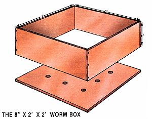

Let Worms Eat Your Garbage
Constructing a wood worm box, lets worms compost trash and waste.
By Mary Appelhof
July/August 1983
My kitchen trash used to smell . . . awful! Coffee grounds, banana peels, lettuce leaves, onion trimmings, orange peels, and plate scrapings all joined with an accumulation of papers, cans, plastic wraps, jars, and bottle caps to produce an unpleasant-and unusable - collection of refuse. Although I emptied the trash can frequently to reduce the odor in the kitchen, I had to hold my breath when I did!
But no longer! I've now solved my problem entirely with the help of Eisenia foetida, the common red wiggler (or brandling) worm. That's right . . . worms eat my garbage! What's more, they convert it to black, earthy smelling, nutrient-rich humus that I use to grow delicious garden vegetables and beautiful houseplants. Operating an indoor worm powered waste converter is easy, convenient, environmentally sound, and inexpensive. It's fun, too. Anyone can do it, and here's how.
VERMICOMPOSTING:THE BASICS
The essential components of a home vermicomposting unit ("vermi" = worm) are an aerated container, some moist bedding, and a few thousand red worms. Because you'll be working with a dynamic process, you'll need to carry out certain maintenance procedures both to keep the worm population healthy and to obtain and utilize the end product. These tasks are scarcely demanding: Set your vegetable waste aside in a small container when preparing meals or cleaning up afterward . . . feed it to the worms once or twice a week . . . and every few months or so, remove the vermicompost and put the worms in fresh bedding.
To determine the size of your worm bin, keep track of the amount of kitchen waste you throw away for a couple of weeks. Use a small bucket or can, and collect such discards as potato peels, citrus rinds, greens, leftover vegetables, eggshells, and bread . . . just about any non meat food residues from your kitchen. Weigh your container to get the average number of pounds per week, then size the vermicomposter accordingly. Your worm bin should provide approximately one square foot of surface for every pound of garbage you'll bury each week. For example, the 8" X 2' X 2' box described here will handle about 4 pounds per week. This bin will be adequate for many one- or two-person households. Another common size is a 1' X 2' X 3' box, which will accommodate about 6 to 6-1/2 pounds of garbage. Aeration is important, and since red worms tend to be surface feeders rather than deep burrowers, a shallow bin with a large surface area is preferable to one that's tall and deep.
BUILD YOUR OWN WORM BIN
For an 8" X 2' X 2' bin servicing a two person household, you'll need the following materials: four 8" X 23-3/8" pieces of 5/8" CDX plywood . . . one 24" X 24" piece of 5/8" CDX plywood . . . a hammer . . . a drill with a 1/2" bit . . . and thirty-six 6d flooring or pallet nails. (These nails have spiraled flutes on their shanks that increase their holding power, a particularly important quality for wood that'll be both damp and dry.)
Alternate the overlap on the sides (see the diagram), and put the box together with three or four nails per side. Hammer the bottom on, then drill nine 1/2" holes in the base for aeration and drainage, and set the bin on blocks, legs, or casters to allow air to circulate underneath. Although the worms rarely crawl out of the holes, small amounts of bedding or worm casts will drop out, so you'll probably want to place a sheet of plastic or a tray underneath the box when it's in its final location.
If you decide you'd like to make a fancy bin, constructed from a more attractive wood, just be sure that you use exterior-grade lumber, since the box will be damp most of the time. Also, avoid pressure-treated or highly aromatic woods-such as cedar or redwood since they may be harmful to the worms.
Used continuously, an unfinished bin should last two to three years. You can increase its longevity by letting it dry out for several days between setups . . . or by using a rotation system with two boxes. Sealing all surfaces with a good finish such as polyurethane, epoxy, or another waterproofing material will extend the box life considerably.
BEDDING DOWN
Shredded corrugated cardboard, machine ripped newsprint or computer printouts, hand-torn newsprint, leaf mold, and animal manures all make satisfactory bedding for the worm bin. Whatever materials are used, they must be able to hold moisture, allow air exchange, and provide a safe medium uncontaminated by harmful chemicals-in which the wigglers can work. Because they're light, fluffy, and easy to dampen to the proper moisture content, shredded corrugated cartons are among the best materials to use . . . but they may be difficult for the average worm-raiser to obtain. The least costly bedding is hand-shredded newsprint. To make it, simply open a section of newspaper, tear it in half, tear the halves in two, and so on, until you have a pile of strips about one to three inches wide.
The native habitats of red worms are decaying leaves, manure, and leaf mold, so any of these can serve as bedding . . . or as amendments to other bedding's. Peat moss added to shredded paper aids in water retention and helps prevent the paper strips from matting . . . but don't use peat moss alone, as it's too acid for the worms.
NAMES AND NUMBERS
There are earthworms and earthworms: Some are better for vermicomposting than others. In my experience, red wigglers such as Eisenia foetida or Lumbricus rubellus are the most satisfactory for several reasons. They process large amounts of organic material . . . reproduce quickly and in confinement . . . and are easily obtained. (Sufficient markets exist to encourage people to cultivate red worms on a full- or part-time basis, so you can buy them by mail during almost any season. Look for advertisements in gardening and fishing magazines.)
You'll want a worm-to-garbage ratio of 2:1. For example, if you bury an average of one pound of garbage per day, you'll need two pounds of worms to consume it. I normally put about half a pound of organic waste a day into my 8" X 2' X 2' bin, so I use one pound of worms in my setup. Most ads price worms by the thousands. To calculate your needs, just figure about 1,000 wigglers per pound (because unsorted pit-run worms come in all sizes, there could be many more than 1,000 of them in a pound).
Bait-size, or breeder, worms are quite large and fat, and have a swollen band, or clitellum, around the middle that indicates they're sexually mature. These grown crawlers lay cocoons-egg capsules from which baby worms will hatch-more quickly than pit-run worms do, and thus rapidly increase your bin's population . . . but breeders usually cost more to begin with because of the extra labor required to sort them. In addition, since breeders are relatively large, there may be only 700 to 800 of them in a pound. (How did I find out the number of worms per pound?Well, the first season that I marketed some of my own worms, I sold them for bait and counted out 50,000 creatures one by one. Count 50,000 of anything one by one, and you'll soon figure out another way to go! I now sell by the pound.)
Whichever type you start with, pit-run or breeders, their population will eventually stabilize at the number that can best be supported by the amount of food available and the condition of their environment.
SETTING THINGS UP
Your home vermicomposting system will require a worm bin . . . some bedding . . . one or two handfuls of soil . . . a sheet of black plastic to cover the surface of the filled bin . . . a bathroom or utility scale . . . a gallon jug . . . a large plastic or metal garbage can (for mixing the fresh bedding) . . . and, of course, the worms.
Once you have your materials, you'll need to prepare the bedding by adding the proper amount of moisture. A worm's body consists of 75°7o to 90°7o water, and its surface must be damp in order for the animal to breathe. If you prepare the bedding with approximately the same moisture content as the worm's body, then, you'll alleviate any stress caused by a too wet or too dry environment.
It's easy to get 75°70 moisture with any dry bedding: Weigh the material, put it in the clean garbage can for mixing, and add three times as many pounds of water as there are pounds of dry bedding. It took 5-113 pounds of dry bedding to set up the 8" X 2' X 2' box shown, so this required 16 pounds of water. (Since the old saying "a pint's a pound the world around" is close to accurate, this weight is roughly equal to 2 gallons.) Once you've watered your medium, add one or two handfuls of soil to it to provide grit for the worms' gizzards. Then mix the whole thing until the water and soil are well distributed throughout the bedding, and toss the entire contents into your worm bin.
Next, dump the worms on top of their freshly prepared home and gently spread them around on the surface. Worms are photosensitive, so they'll gradually move down into the bedding to avoid the light. Once they're "gone", dig a hole in the bedding large enough to hold the amount of garbage you want to bury. Drop the leftovers into the opening, spread about an inch of bedding over it, and then place a sheet of black plastic on top of the surface to retain moisture and to keep out light. From then on, rotate burial spots around the bin whenever you add more garbage (I bury mine about twice a week).
UNDESIRABLES
Adding large quantities of meat and bones may present problems in a worm bin because such substances are likely to create a good bit of odor . . . which is not only disagreeable, but apt to draw rodents to the box. However, small amounts (plate scrapings, for example) can be incorporated without fear. Be sure, of course, to keep out anything nonbiodegradable, such as plastic bags, bottle caps, rubber bands, foil, glass, or sponges. And if you have cats, set a screen or other shielding device on top of your "wormstead" to prevent the felines from using the bin as a litter box!
Active worm bins have little or no noticeable odor. The light, fluffy bedding . . . the aeration holes . . . and the presence of earthworms all help to make oxygen available to the decomposer organisms that assist the worms in breaking down the organic waste into humus. However, if conditions occur to prevent oxygen from circulating, other (anaerobic) organisms take over . . . and their end products smell quite unpleasant. If this happens, add more bedding, try to increase air availability, and don't put in any more waste for a while. Assuming that the worms survive the trauma, the situation should, given time, correct itself.
TLC FOR RED WORMS
Basically, worm care consists of providing the wigglers with the proper environment, checking them occasionally, and-other than that-leaving them alone! Daily care is unnecessary: The less you disturb your industrious helpers, the better off they are.
About six weeks after you start the bin, you'll notice changes in the bedding. It will get darker, and you'll be able to identify individual castings (worm manure). What's more, despite the regular addition of food waste, the volume of matter in the bin will slowly diminish. As the proportion of castings thus increases, the quality of the environment for the worms decreases. After a few months, you'll have to remove the worms and the usable compost, and prepare a batch of fresh bedding.
SORTING THINGS OUT
Every four months or so, then, plan to spend a couple of hours sorting worms. It's easy to do . . . and even fun when your family or friends help. Begin by gathering a 6-footsquare sheet of heavy plastic, a light source (such as a lamp with a I00-watt bulb), a plastic dishpan for the worms, a garbage can or heavy duty plastic bag to hold the vermicompost, and some fresh bedding. Spread the plastic sheet on the floor or on a large table, and overturn the entire contents of the worm bin onto it. Make about nine cone-shaped piles out of this material. You should see worms all over the place, but if the light is bright enough, they'll quickly move away from it toward the center of each mound.
Now, go read a book or do something else for five or ten minutes. When you return, you won't see any worms. Gently remove the sur face of each pile. As you do so, the newly exposed worms will again retreat into the mound. By following this procedure one heap at a time, you'll find that when you come back to the first pile, its worms will have disappeared again, and you can remove a second layer from each heap.
Eventually, the creatures will congregate in a mass at the bottom of each pile. Put them in the dishpan, clean off any castings or compost, and weigh the worms. If you haven't let the box go undivided for too long, you should have at least as many as you started out with . . . perhaps more! (If you change the bedding every two to three months instead of every four months, you'll harvest even more worms. As their environment decreases in quality, the worms gradually die off and are composted themselves.) After weighing them, put the worms in fresh bedding and let them "do their thing", as before. Meanwhile, you can deal with the buckets of rich, lovely vermicompost you scooped out in the sorting process.
Your compost will vary in consistency, depending on how long the bin has been in operation, how much and what kind of garbage was buried, and how much decomposition has occurred. Some of the most recently buried food waste can go right back into the fresh bedding. The rest of the vermicompost can be stored in a plastic bag, garbage can, or corrugated carton . . . where it will continue to break down. As it dries it can be used on your garden or houseplants.
During the sorting procedure, you're likely to encounter many earth-living creatures you hadn't noticed before, including springtails, white "pot worms" or enchytraeids, sow bugs, mites, and even a centipede or two. Except for the centipedes, which may attack worms, most of these organisms help in the process of converting your garbage to compost, so consider them friends.
VERMIGOLD
Vermicompost is a rich mixture of humus, wormcasts, and decomposing matter, so use it selectively and sparingly! Sprinkle it into seed rows, or throw a double handful into the hole in which you're transplanting cole crops or tomatoes. Later in the season, top-dress the soil around the base of the mature plants to give them an added shot of nutrients prior to harvest. Don't worry if worms or their egg capsules are present in the compost. While the creatures live, they'll aerate the soil, produce castings, add nitrogen from their mucus, and do all those other good things that worms do for soil. Just don't expect them to thrive in your garden: Red worms aren't normally soil-dwelling creatures, and they require great quantities of organic matter to live.
Wormcasts are much more homogeneous, highly processed, and packed with nutrients than vermicompost. In fact, by itself, this manure might contain high enough concentrations of salts to inhibit plant growth. The solution is simply to use castings sparingly or to dilute them with other potting materials such as peat moss, sand, garden soil, vermiculite, or perlite. Different plants will respond differently, but a mixture of 1/3 wormcasts, 1/3 perlite, and 1/3 woody peat is good for African violets. The addition of a 1/4" layer of wormcasts alone to the surface of your houseplants' soil should also produce positive results in a fairly short time.
VERMI-VIRTUES
A home vermicomposting system saves resources and reduces your waste-disposal costs. With worms handling the organic materials, other refuse such as cans and bottles stay cleaner and become much easier to recycle. Offensive odors are minimized . . . nutritional values are utilized . . . and the end product of the system is a valuable soil amendment and fertilizer, plus-if you choose - bait for fishing.
The worm may be a lowly creature, but there's no doubt that it's high on the list of useful ones!
EDITOR'S NOTE: Readers who'd like more information on this subject will find additional material in Ms. Appelhof's book, Worms Eat My Garbage, available from Flower Press, Dept. TMEN, 10332 Shaver Road, Kalamazoo, Michigan 49002, for $6.95 postpaid (Michigan residents add 24e sales tax).
 PHOTOS BY MARY FRANCES FENTON [1]Shreded corrugated bedding is weighed. [2] Red wigglers are added to the in.[3] Worms and casting are sorted and harvested on a plastic-covered tale.[4] Vermiompost is used as a top-dressing for young carrots. |
 |
|